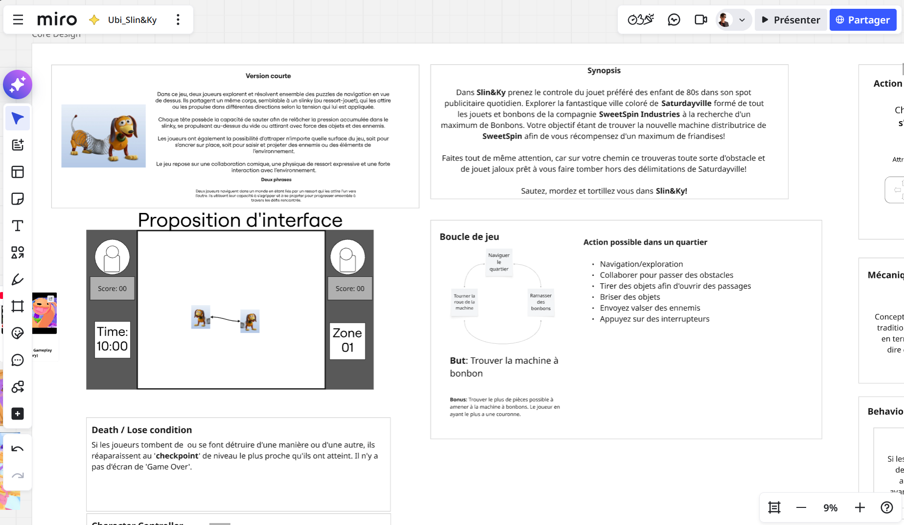
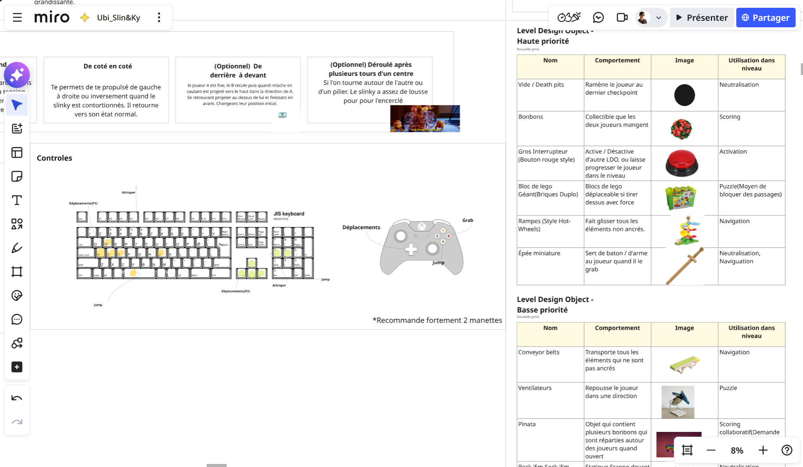
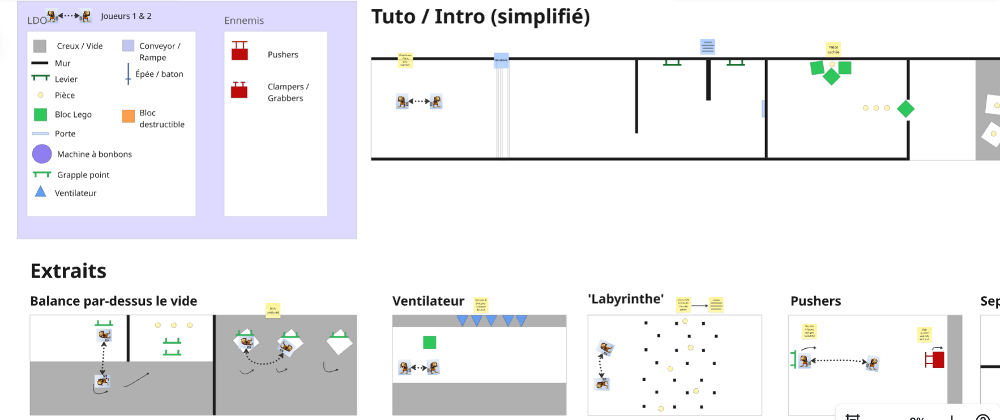
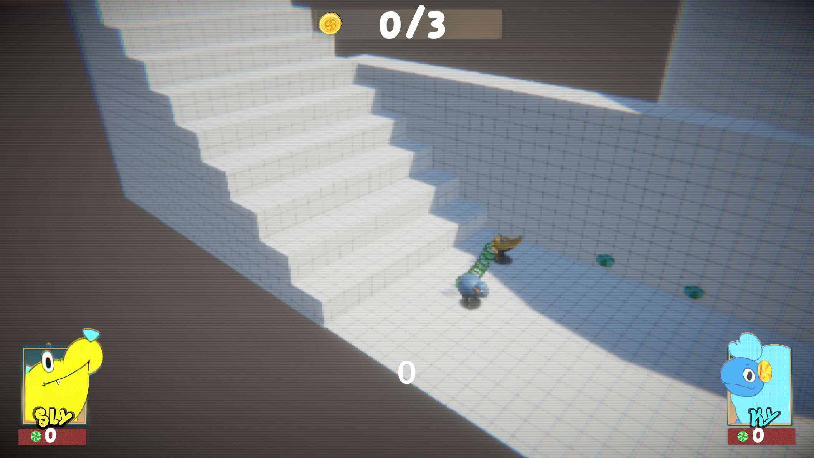
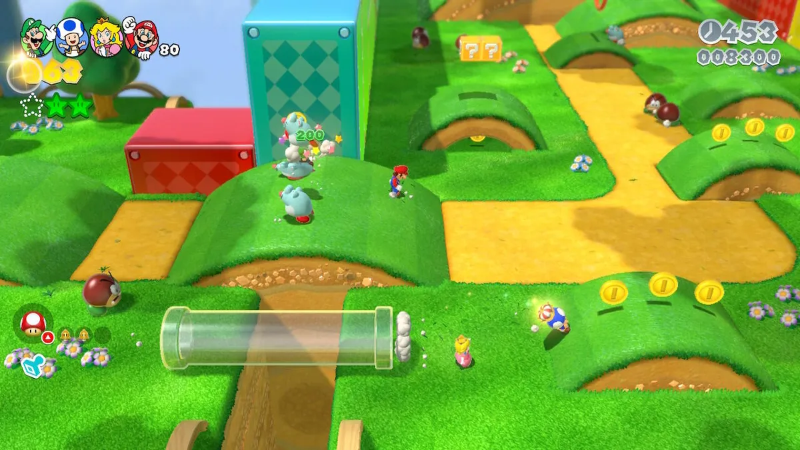
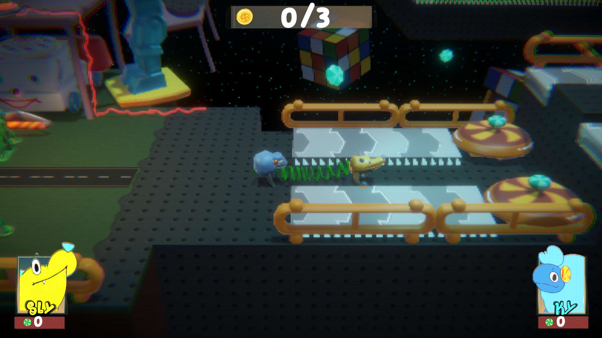
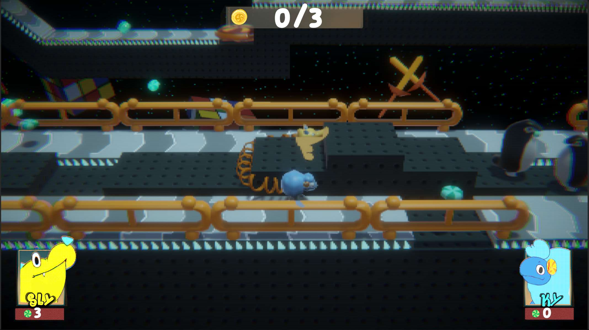
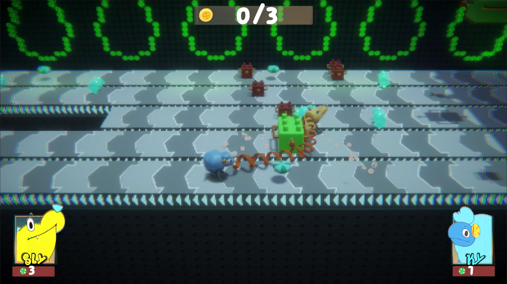

Project Description
Sly n' Ky : 2 in 1 Toy is a cooperative 3D platformer where two players control the extremities of a toy connected by a slinky.
Players must learn to overcome levels by using the spring's tension to their advantage, even if it also creates disadvantages.
Developed as part of the Ubisoft Game Lab 2026 competition, the project had to be playable with a minimum of two players and use only the directional pad alongside two main buttons, in the spirit of the imposed theme: the 80s and 90s.
Gameplay Video
My Role
As a designer on the project, I conceptualized and planned (Miro, Fibery) the slinky's possible abilities and movements as well as each player's controls and abilities. Once the conception phase was completed, my work focused on level design and the implementation and placement of LDOs (Level Design Objects), alongside additional programming (C#) related to them.
Preproduction Documentation
Documentation excerpts created during the conception phase: controls definition, slinky abilities, LDO list, and 2D plans for possible level challenges.



Design Approach
3C Design
In order to fully exploit the slinky premise, we first had to determine which abilities were achievable within the competition's constraints.
The first was the "slingshot", allowing players to launch themselves using the spring's force in order to reach otherwise inaccessible heights.
 However, in order to allow this movement, players needed the ability to create and release tension in the slinky, leading to the addition of jumping and a bite mechanic allowing them to latch onto surfaces.
Consequently, we needed a camera angle that could clearly show the depth and height of the play space.
We initially experimented with fixed camera angles similar to Resident Evil, but the angle transitions created too much friction.
However, in order to allow this movement, players needed the ability to create and release tension in the slinky, leading to the addition of jumping and a bite mechanic allowing them to latch onto surfaces.
Consequently, we needed a camera angle that could clearly show the depth and height of the play space.
We initially experimented with fixed camera angles similar to Resident Evil, but the angle transitions created too much friction.

We therefore opted for a camera inspired by Super Mario: 3D World, showing the entirety of the immediate play space without interruption. This decision, however, moved us away from the competition's retro theme. To counterbalance this aspect, the environments were directed toward a toy commercial aesthetic.

Level Progression
In order to differentiate the levels, the second introduces unique LDOs, mainly conveyor belts and trampolines.
As onboarding, conveyor belts are first introduced without immediate danger.

Players are then transported to a second, more dangerous section where the paths split in order to encourage risk-taking and cooperation.
In the background, another conveyor transports candies, foreshadowing an upcoming challenge. Throughout the level, the complexity of conveyor-related challenges progressively increases.
In this example, conveyor belts move obstacles against the players while they must avoid tangling their slinky as they progress.Game Excerpts